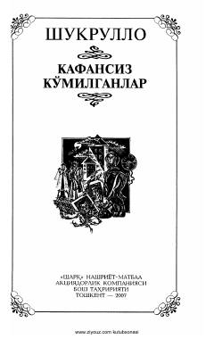

KKSovet davridagi qatag'on qurbonlarining mashaqqatli qismatiga bag'ishlangan real voliyalarga asoslangan asar.
Ushbu asar sovet davridagi qatag'on qurbonlari taqdiri, adolatsizlik va mustabid tuzumning og'ir jinoyatlarini fosh etadi. Muallif o'z boshidan kechirgan mashaqqatli lager yillari va insoniy iroda sinovlarini real voqealar asosida hikoya qiladi.